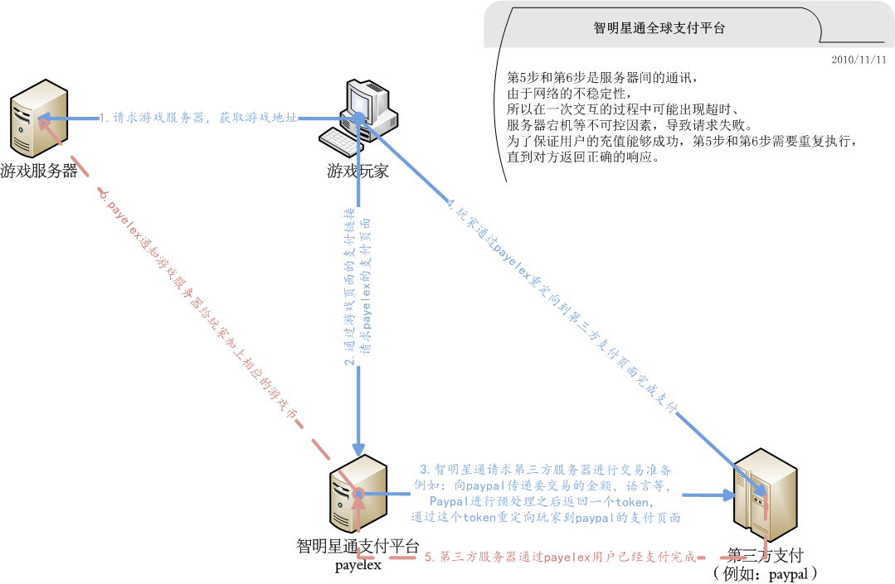
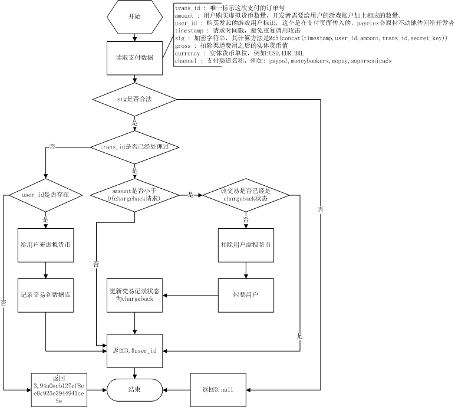

概述¶
在用户支付完成之后，支付平台会将支付结果通知到应用提供的回调地址，应用接收到回调后，应该根据结果给用户提供相应的商品，并给支付平台返回一个事先约定好的结果。至此一笔交易在支付平台才算完成。
当应用没有返回要求的结果时，支付平台最多会回调3次，3次不成功之后，当前交易会被设置为失败交易，之后会有客服介入，手动处理失败交易。
为了保证应用方收到的数据是由支付平台发送而非第三方伪造，支付平台提供了二次验证的方式，应用服务端在收到回调通知之后，可以拿收到的数据到支付平台提供的接口进行验证，若验证通过，则说明该通知真实可信。
回调环节¶
应用需要提供一个回调地址来接收回调参数
支付平台会使用post方式发送以下参数：
- trans_id：交易流水号，该交易在支付平台生成的唯一id
- amount：道具数量，该值由前端传递而来
- user_id：完成支付的玩家id，该值由前端传递而来
- timestamp：时间戳
- gross：交易金额
- currency：货币类型代码，比如USD(美元)、CNY(人民币)、BRL(巴西雷亚尔)
- channel：渠道名称，比如alipay、paypal、mycard
- item：商品描述，该值由前端传递而来
- custom_data：应用方的自定义字段，由前端传递而来
- product_id：应用方定义的商品id，由前端传递而来
- pay_type：交易类型，移动端该值为mobile
- role_id：角色id
支付平台需要应用服务端返回以下规则的字符串：
- 3,null：表示游戏方处理失败
- 3,94a0acb127ef8ee8c925e3944941ce5e：表示游戏方不认识这个玩家id
- 3,user_id：表示处理成功，比如回调时，user_id为123456，那么游戏方的返回值应该为3,123456
如果3次回调后应用服务端未按规则返回，则该交易失败，等待客服处理。
安全验证¶
安全验证机制可以保证应用服务端收到的回调确实是由支付平台发起而非第三方伪造。
支付原理图¶

回调流程¶
- 当用户成功付款之后，payelex会向用户提供的callback url发送相应的请求，包含trans_id(参数订单号)，amount(支付虚拟货币数)，user_id(用户标识)，timestamp(时间戳，毫秒)，gross(扣除渠道成本之后的实体货币值)，currency(实体货币单位)，channel(支付渠道)，sig(加密字符串)
- 如果callback url返回失败标识，payelex会连续重复调用3次callback url（使用相同的trans_id），如果三次调用都返回失败标识，那么会将该次支付放到failed transaction记录集里边。可能发生的情况是：开发者正在进行停机维护。
注意：当payelex没有接收到callback url的返回数据，会再次使用相同的trans_id去请求callback url。
为什么会有这种情况发生呢？请看下面的情况：
假设payelex的服务器是A，开发者的游戏服务器是B
- A向B发送callback请求
- B接收到这个请求，成功给用户加上了游戏币。返回A成功信号
- 网络中断，A没有收到B的成功信号
- A继续使用相同的参数请求B。这时，B发现该交易号已经成功处理了。故直接给A返回成功信号。
- A接收到成功信号，停止请求B。交易完成。
- payelex会定期检查failed transaction，向开发者发送邮件，并且再次回调callback url。这个过程将会一直进行下去，直到该支付请求被处理成功。
接入流程¶
1. 注册账号
登陆r.337.com(智明星通Redmine系统),点击我的项目->XXXX->平台发布管理，选择某一个已发布的应用，点击编辑->支付信息。这样，您就可以编辑您的支付应用了。另外，编辑完了之后，记得点击发布支付应用。如果还没有开通账号，请联系liyingxia@elex-tech.com(李迎霞)开通账号。
2. 填写支付应用配置信息
支付应用配置信息详解
名称 中文名称 说明 gameName 支付页面显示的游戏名称 根据国家不同，名称也需要使用相应国家的语言，例如HappyFarm(英文), Frohe Ernte(德文) country 国家 游戏玩家针对的国家，例如:US(美国),UK(英国),CN(中国),PL(波兰)，代码详见 http://www.iso.org/iso/english_country_names_and_code_elements paymentCurrency 支持货币 例如USD,EUR,BRL，各个国家支持的货币，请参考文档 主要国家货币代码 server 服务器区 这个是针对web game而言的，如果您的游戏是sns游戏，不需要填写，请填写s1,s2,s3,s4... devMail 开发者邮箱 当支付应用出现异常，例如回调失败，作弊交易，payelex会在第一时间给开发者邮箱发送报警邮件 adminUserIds 测试账号 逗号分隔的uid字符串，用于在测试环境下面进行支付测试，只有这些用户能够进行测试，使用其他用户支付会抛出异常 callbackUrl 回调地址 当用户支付完成之后，payelex会向该地址POST支付数据，给用户充值虚拟货币 secretKey 回调接口密钥 用于加密payelex和游戏服务器之间传输的支付数据 currencyName 游戏币名称 再支付页面上显示给玩家看的，需要根据国家使用多语言，例如:FarmCredits(英语),Bauerngeld(德语)，人民币(中文)，只需要填写其中一种语言即可 vcurrencyLogo 游戏币图标 再支付页面上显示给玩家看的，例如http://static.elex-tech.us/mb/Bauerngeld.png conversionMap 兑换比例 设置真实货币和虚拟货币之间的购买关系,详见 如何设置兑换比例 支付应用样例配置
字段 样例值 支付页面显示的游戏名称 Frohe Ernte 国家 DE 支持货币 EUR 开发者邮箱 zhoufan@elex-tech.com 测试账号 uid1,uid2 回调地址 http://www.elex-tech.com/farm_de/payment/callback.php 回调密钥 12345 游戏币名称 Bauerngeld 游戏币图标 http://static.elex-tech.us/mb/Bauerngeld.png 兑换比例 真实货币一栏填写1，虚拟货币一栏填写10
{kind=link}
3. 支付测试
创建好了支付应用之后，游戏就可以进行测试了，请使用以下的测试账号，如何使用，请参考文档 支付接入详细流程 ：:
用户名:elex_test_customer@elex-tech.com
密码:h7GAAnTzvkKwUOyTaoH2
4. 发布支付应用
测试完成之后，点击配置页面的 发布支付应用 链接，发布该应用到生产环境。
注意:在发布之前，会对应用的配置进行如下检测
- adminUserIds是否设置
- callbackUrl是否设置
- callback是否正确返回。payelex会POST数据到回调地址，检测如下的几种返回情况：
- 3,null: 出错，例如signature验证不通过
- 3,94a0acb127ef8ee8c925e3944941ce5e: 用户uid不存在
- 3,$uid: $uid会被用户的平台uid替代，这种返回结果表示成功返回
回调（已过期，请不要再使用）¶
回调处理流程图

回调格式
http://www.example.com/callback_url?trans_id=[TRANS_ID]&amount=[AMOUNT]&user_id=[USER_ID]×tamp=[TIMESTAMP]&sig=[SIG]&gross=[GROSS]¤cy=[CURRENCY]&channel=[CHANNEL]
回调方法
POST
参数说明
- trans_id : 唯一标示这次支付的订单号
- amount : 用户购买游戏币数量，开发者需要给用户的游戏账户加上相应的数量。
- 注意: amount可以为负数，这种情况出现在玩家利用信用卡的退款机制进行欺诈交易，获取非法游戏币。 如果发现回调的amount为负值，第三方开发者需要减除相应的游戏币。我们推荐的操作是：
- 减去相应的用户的游戏币
- 对用户进行封禁操作，封禁操作可以设置封禁天数，根据获得的非法游戏币的数量设置不同的封禁天数，一般可以设置为：1天，1周，一个月，永久封禁
- user_id : 购买发起的游戏用户标识
- timestamp : 请求时间戳，避免重复调用攻击
- sig : 加密字符串，其计算方法是md5(concat(timestamp,user_id,amount,trans_id,secret_key))，这样就能保证通信的安全
- gross : 扣除渠道费用之后的实体货币值(之所以加入gross参数，是因为有些第三方游戏厂商要求传递每次交易的实体货币数量，便于他们那边对账，但是这个值只是作为参考，并不是准确的)
注意:
- gross只是作为参考使用，不作为对账。
- 有些支付渠道，例如supersonicads，sponsorpay，是不会向payelex传递这个数据的，所以payelex也不会包含该数据，这种情况下gross为0。
- 有些支付渠道，例如moneybookers，不会在单次交易的回调中(详见支付原理图第5步)向智明星通传递渠道成本数据，所以这时候的gross是扣除渠道成本之前的数据
- currency : 实体货币单位，例如:USD,EUR,BRL
- channel : 支付渠道名称，例如: paypal,moneybookers,mopay,supersonicads
返回格式
- 3,null : 处理失败
- 3,94a0acb127ef8ee8c925e3944941ce5e : 处理失败,没有相应的uid
- 3,$user_id : 处理成功
IP验证
需要对请求作IP验证，只有IP地址：174.37.255.60，173.192.195.130发送过来的请求才能通过
样例代码
php
<?php
//ip验证
$ip = get_ip();
if (!in_array($ip, array('174.37.255.60','173.192.195.130'))) die("3,null");
$user_id = $_REQUEST ["user_id"];
$amount = $_REQUEST ["amount"];
$transaction_id = $_REQUEST ["trans_id"];
$timestamp = $_REQUEST['timestamp'];
$sig = $_REQUEST ["sig"];
$gross = $_REQUEST["gross"];
$currency=$_REQUEST["currency"];
$channel=$_REQUEST["channel"];
$secret_key = 'example';
$mysig = md5 ($timestamp.$user_id.$amount.$transaction_id.$secret_key);
if ($mysig != $sig) {
// 从数据库中查找到相应的用户
$user = find_user_from_db($user_id);
if ($user == null) echo '3,94a0acb127ef8ee8c925e3944941ce5e';
return;
}
// 给用户加虚拟货币
echo '3,'.$user_id;
function get_ip() {
if (_valid_ip($_SERVER["HTTP_CLIENT_IP"])) {
return $_SERVER["HTTP_CLIENT_IP"];
}
foreach (explode(",",$_SERVER["HTTP_X_FORWARDED_FOR"]) as $ip) {
if (_valid_ip(trim($ip))) {
return $ip;
}
}
if (_valid_ip($_SERVER["HTTP_X_FORWARDED"])) {
return $_SERVER["HTTP_X_FORWARDED"];
} elseif (_valid_ip($_SERVER["HTTP_FORWARDED_FOR"])) {
return $_SERVER["HTTP_FORWARDED_FOR"];
} elseif (_valid_ip($_SERVER["HTTP_FORWARDED"])) {
return $_SERVER["HTTP_FORWARDED"];
} elseif (_valid_ip($_SERVER["HTTP_X_FORWARDED"])) {
return $_SERVER["HTTP_X_FORWARDED"];
} else {
return $_SERVER["REMOTE_ADDR"];
}
}
function _valid_ip($ip) {
if (!empty($ip) && ip2long($ip)!=-1) {
$reserved_ips = array (
array('0.0.0.0','2.255.255.255'),
array('10.0.0.0','10.255.255.255'),
array('127.0.0.0','127.255.255.255'),
array('169.254.0.0','169.254.255.255'),
array('172.16.0.0','172.31.255.255'),
array('192.0.2.0','192.0.2.255'),
array('192.168.0.0','192.168.255.255'),
array('255.255.255.0','255.255.255.255')
);
foreach ($reserved_ips as $r) {
$min = ip2long($r[0]);
$max = ip2long($r[1]);
if ((ip2long($ip) >= $min) && (ip2long($ip) <= $max)) return false;
}
return true;
} else {
return false;
}
}
?>
回调（新规则）¶
注意: 目前我们优先采用新规则回调产品方，如果产品方未返回 “3,$user_id” 的话我们才用旧的规则再回调一次。
回调处理流程图

回调格式
回调参数中不再包含sig验证了：
http://www.example.com/callback_url?trans_id=[TRANS_ID]&amount=[AMOUNT]&user_id=[USER_ID]×tamp=[TIMESTAMP]&gross=[GROSS]¤cy=[CURRENCY]&channel=[CHANNEL]
回调方法
POST
参数说明
- trans_id : 唯一标示这次支付的订单号
- amount : 用户购买游戏币数量，开发者需要给用户的游戏账户加上相应的数量。
- 注意: amount可以为负数，这种情况出现在玩家利用信用卡的退款机制进行欺诈交易，获取非法游戏币。 如果发现回调的amount为负值，第三方开发者需要减除相应的游戏币。我们推荐的操作是：
- 减去相应的用户的游戏币
- 对用户进行封禁操作，封禁操作可以设置封禁天数，根据获得的非法游戏币的数量设置不同的封禁天数，一般可以设置为：1天，1周，一个月，永久封禁
- user_id : 购买发起的游戏用户标识
- timestamp : 请求时间戳，避免重复调用攻击
- sig : 加密字符串，其计算方法是md5(concat(timestamp,user_id,amount,trans_id,secret_key))，这样就能保证通信的安全
- gross : 扣除渠道费用之后的实体货币值(之所以加入gross参数，是因为有些第三方游戏厂商要求传递每次交易的实体货币数量，便于他们那边对账，但是这个值只是作为参考，并不是准确的)
注意:
- gross只是作为参考使用，不作为对账。
- 有些支付渠道，例如supersonicads，sponsorpay，是不会向payelex传递这个数据的，所以payelex也不会包含该数据，这种情况下gross为0。
- 有些支付渠道，例如moneybookers，不会在单次交易的回调中(详见支付原理图第5步)向智明星通传递渠道成本数据，所以这时候的gross是扣除渠道成本之前的数据
- currency : 实体货币单位，例如:USD,EUR,BRL
- channel : 支付渠道名称，例如: paypal,moneybookers,mopay,supersonicads
返回格式
- 3,null : 处理失败
- 3,94a0acb127ef8ee8c925e3944941ce5e : 处理失败,没有相应的uid
- 3,$user_id : 处理成功
IP验证
需要对请求作IP验证，只有IP地址：174.37.255.60，173.192.195.130发送过来的请求才能通过
**返回格式
- 3,null : 处理失败
- 3,94a0acb127ef8ee8c925e3944941ce5e : 处理失败,没有相应的uid
- 3,$user_id : 处理成功
IP验证
需要对请求作IP验证，只有IP地址：174.37.255.60，173.192.195.130发送过来的请求才能通过
验证参数
当接收到支付系统的回调之后，应请求地址 VERIFY URL 验证交易信息以保证交易信息的正确性。如果交易信息正确则智明星通支付系统将返回 ‘OK’。:
[VERIFY URL]?trans_id=[TRANS_ID]&amount=[AMOUNT]&user_id=[USER_ID]×tamp=[TIMESTAMP]&gross=[GROSS]¤cy=[CURRENCY]&channel=[CHANNEL]
- VERIFY URL: https://pay.337.com/payelex/api/callback/verify.php
- REQUEST TYPE: GET/POST
验证返回
- OK：交易信息正确
- 否则交易信息不可信，不能发游戏币
样例代码
注意：php版本的代码需要 下载证书文件 ，请将这个文件放到和回调php文件同样的目录。 如果想要了解更多有关https的资料，请参阅文档：HTTPS学习笔记
php
<?php
$trans_id = $_REQUEST ["trans_id"];
$user_id = $_REQUEST ["user_id"];
$amount = $_REQUEST['amount'];
$gross = $_REQUEST['gross'];
$currency = $_REQUEST['currency'];
$channel = $_REQUEST['channel'];
$timestamp = $_REQUEST['timestamp'];
ob_clean();
//To check if the transaction exists in db, if it does. means the transactions has been successfully processed. Just return OK status
$exist = is_trans_exist($trans_id);
if($exist) {
echo '3,'.$user_id;
return;
}
//to verify the transaction towards payelex server.
$res = check_payelex_transaction($trans_id, $user_id, $amount, $gross, $currency, $channel);
if(!$res) {
echo "3,null";
return;
}
//retrieve the user from db.
$user = find_user_from_db();
if ($user == null) {
echo '3,94a0acb127ef8ee8c925e3944941ce5e';
return;
}
//recharge the user with the deserved game coins.
if(add_coins($_REQUEST)) {
echo '3,'.$user_id;
return;
}
echo "3,null";
function check_payelex_transaction($trans_id, $user_id, $amount, $gross, $currency, $channel) {
$ch = curl_init();
curl_setopt($ch, CURLOPT_SSL_VERIFYPEER, true);
curl_setopt($ch, CURLOPT_SSL_VERIFYHOST, 1);
//verisign_ca.crt is the public certificate from VeriSign(It is the biggest Certificate Authority which issue ELEX client certificate)
//verisign_ca.crt must be located at the same directory as this PHP code are.
curl_setopt($ch, CURLOPT_CAINFO, 'verisign_ca.crt');
curl_setopt($ch, CURLOPT_HTTPHEADER, array("Content-Type: application/x-www-form-urlencoded"));
curl_setopt($ch, CURLOPT_URL, 'https://pay.337.com/payelex/api/callback/verify.php');
curl_setopt($ch, CURLOPT_POST, true);
curl_setopt($ch, CURLOPT_RETURNTRANSFER, true);
$params = array(
'trans_id'=>$trans_id,
'user_id'=>$user_id,
'amount'=>$amount,
'gross'=>$gross,
'currency'=>$currency,
'channel'=>$channel,
'timestamp'=>$timestamp
);
curl_setopt($ch, CURLOPT_POSTFIELDS, http_build_query($params));
$result = curl_exec($ch);
curl_close($ch);
$result = trim($result);
if ($result === 'OK') return true;
return false;
}
java
import java.io.ByteArrayInputStream;
import java.io.IOException;
import java.io.InputStream;
import java.io.InputStreamReader;
import java.io.StringWriter;
import java.net.HttpURLConnection;
import java.net.URL;
import java.net.URLEncoder;
import java.security.InvalidKeyException;
import java.security.NoSuchAlgorithmException;
import java.security.NoSuchProviderException;
import java.security.PublicKey;
import java.security.SignatureException;
import java.security.cert.Certificate;
import java.security.cert.CertificateException;
import java.security.cert.CertificateFactory;
import java.security.cert.X509Certificate;
import javax.net.ssl.HttpsURLConnection;
import javax.net.ssl.SSLContext;
import javax.net.ssl.TrustManager;
import javax.net.ssl.X509TrustManager;
import javax.servlet.ServletException;
import javax.servlet.http.HttpServlet;
import javax.servlet.http.HttpServletRequest;
import javax.servlet.http.HttpServletResponse;
public class PayelexTransactionServlet extends HttpServlet {
private static final long serialVersionUID = -2108375440169533437L;
private static final String VERIFY_URL = "https://pay.337.com/payelex/api/callback/verify.php";
private static final String VERISIGN_CA =
"-----BEGIN CERTIFICATE-----\n"+
"MIIE0zCCA7ugAwIBAgIQGNrRniZ96LtKIVjNzGs7SjANBgkqhkiG9w0BAQUFADCByjELMAkGA1UE\n"+
"BhMCVVMxFzAVBgNVBAoTDlZlcmlTaWduLCBJbmMuMR8wHQYDVQQLExZWZXJpU2lnbiBUcnVzdCBO\n"+
"ZXR3b3JrMTowOAYDVQQLEzEoYykgMjAwNiBWZXJpU2lnbiwgSW5jLiAtIEZvciBhdXRob3JpemVk\n"+
"IHVzZSBvbmx5MUUwQwYDVQQDEzxWZXJpU2lnbiBDbGFzcyAzIFB1YmxpYyBQcmltYXJ5IENlcnRp\n"+
"ZmljYXRpb24gQXV0aG9yaXR5IC0gRzUwHhcNMDYxMTA4MDAwMDAwWhcNMzYwNzE2MjM1OTU5WjCB\n"+
"yjELMAkGA1UEBhMCVVMxFzAVBgNVBAoTDlZlcmlTaWduLCBJbmMuMR8wHQYDVQQLExZWZXJpU2ln\n"+
"biBUcnVzdCBOZXR3b3JrMTowOAYDVQQLEzEoYykgMjAwNiBWZXJpU2lnbiwgSW5jLiAtIEZvciBh\n"+
"dXRob3JpemVkIHVzZSBvbmx5MUUwQwYDVQQDEzxWZXJpU2lnbiBDbGFzcyAzIFB1YmxpYyBQcmlt\n"+
"YXJ5IENlcnRpZmljYXRpb24gQXV0aG9yaXR5IC0gRzUwggEiMA0GCSqGSIb3DQEBAQUAA4IBDwAw\n"+
"ggEKAoIBAQCvJAgIKXo1nmAMqudLO07cfLw8RRy7K+D+KQL5VwijZIUVJ/XxrcgxiV0i6CqqpkKz\n"+
"j/i5Vbext0uz/o9+B1fs70PbZmIVYc9gDaTY3vjgw2IIPVQT60nKWVSFJuUrjxuf6/WhkcIzSdhD\n"+
"Y2pSS9KP6HBRTdGJaXvHcPaz3BJ023tdS1bTlr8Vd6Gw9KIl8q8ckmcY5fQGBO+QueQA5N06tRn/\n"+
"Arr0PO7gi+s3i+z016zy9vA9r911kTMZHRxAy3QkGSGT2RT+rCpSx4/VBEnkjWNHiDxpg8v+R70r\n"+
"fk/Fla4OndTRQ8Bnc+MUCH7lP59zuDMKz10/NIeWiu5T6CUVAgMBAAGjgbIwga8wDwYDVR0TAQH/\n"+
"BAUwAwEB/zAOBgNVHQ8BAf8EBAMCAQYwbQYIKwYBBQUHAQwEYTBfoV2gWzBZMFcwVRYJaW1hZ2Uv\n"+
"Z2lmMCEwHzAHBgUrDgMCGgQUj+XTGoasjY5rw8+AatRIGCx7GS4wJRYjaHR0cDovL2xvZ28udmVy\n"+
"aXNpZ24uY29tL3ZzbG9nby5naWYwHQYDVR0OBBYEFH/TZafC3ey78DAJ80M5+gKvMzEzMA0GCSqG\n"+
"SIb3DQEBBQUAA4IBAQCTJEowX2LP2BqYLz3q3JktvXf2pXkiOOzEp6B4Eq1iDkVwZMXnl2YtmAl+\n"+
"X6/WzChl8gGqCBpH3vn5fJJaCGkgDdk+bW48DW7Y5gaRQBi5+MHt39tBquCWIMnNZBU4gcmU7qKE\n"+
"KQsTb47bDN0lAtukixlE0kF6BWlKWE9gyn6CagsCqiUXObXbf+eEZSqVir2G3l6BFoMtEMze/aiC\n"+
"Km0oHw0LxOXnGiYZ4fQRbxC1lfznQgUy286dUV4otp6F01vvpX1FQHKOtw5rDgb7MzVIcbidJ4vE\n"+
"ZV8NhnacRHr2lVz2XTIIM6RUthg/aFzyQkqFOFSDX9HoLPKsEdao7WNq\n"+
"-----END CERTIFICATE-----";
@Override
protected void doGet(HttpServletRequest request, HttpServletResponse response)
throws ServletException, IOException {
doPost(request, response);
}
protected void doPost(HttpServletRequest request, HttpServletResponse response)
throws ServletException, IOException {
String transId=request.getParameter("trans_id");
String userId=request.getParameter("user_id");
String amount=request.getParameter("amount");
String gross=request.getParameter("gross");
String currency=request.getParameter("currency");
String channel=request.getParameter("channel");
String timestamp=request.getParameter("timestamp");
boolean flag=check(transId,userId,amount,gross,currency,channel,timestamp);
response.setContentType("application/json; charset=UTF-8");
response.setStatus(HttpServletResponse.SC_OK);
if(flag==true){
//TODO:检查该uid在游戏中是否真实存在，如果不存在的话返回3,94a0acb127ef8ee8c925e3944941ce5e
boolean isUserExists=checkUserIdExists(userId);
if(isUserExists==false){
response.getWriter().write("3,94a0acb127ef8ee8c925e3944941ce5e");
}else{
response.getWriter().write("3,"+userId);
}
}else{
response.getWriter().write("3,null");
}
}
public boolean checkUserIdExists(String userId){
//TODO:判断该玩家是否真实存在,需要开发者自行扩展该方法
return false;
}
public static final boolean check(String transId, String userId, String amount, String gross, String currency, String channel,String timestamp) {
try {
StringBuilder buffer = new StringBuilder();
buffer.append("trans_id=").append(URLEncoder.encode(transId, "UTF-8")).append("&")
.append("user_id=").append(URLEncoder.encode(userId, "UTF-8")).append("&")
.append("amount=").append(URLEncoder.encode(amount, "UTF-8")).append("&")
.append("gross=").append(URLEncoder.encode(gross, "UTF-8")).append("&")
.append("currency=").append(URLEncoder.encode(currency, "UTF-8")).append("&")
.append("channel=").append(URLEncoder.encode(channel, "UTF-8")).append("&")
.append("timestamp").append(URLEncoder.encode(timestamp, "UTF-8"));
TrustManager[] trustAllCerts = new TrustManager[]{
new X509TrustManager() {
public X509Certificate[] getAcceptedIssuers() {
return null;
}
public void checkClientTrusted(X509Certificate[] certs, String authType) {
}
public void checkServerTrusted(X509Certificate[] certs, String authType) {
InputStream is = new ByteArrayInputStream(VERISIGN_CA.getBytes());
try {
CertificateFactory cf = CertificateFactory.getInstance("X.509");
Certificate publicCert = cf.generateCertificate(is);
PublicKey publicKey = publicCert.getPublicKey();
boolean validSignature = false;
for (int i = 0; i < certs.length; i++) {
try {
certs[i].verify(publicKey);
validSignature = true;
break;
} catch (SignatureException e) {}
}
if (!validSignature) {
throw new SignatureException();
}
} catch (InvalidKeyException e) {
throw new RuntimeException(e);
} catch (CertificateException e) {
throw new RuntimeException(e);
} catch (NoSuchAlgorithmException e) {
throw new RuntimeException(e);
} catch (NoSuchProviderException e) {
throw new RuntimeException(e);
} catch (SignatureException e) {
throw new RuntimeException(e);
}
}
}
};
SSLContext sc = SSLContext.getInstance("SSL");
sc.init(null, trustAllCerts, new java.security.SecureRandom());
HttpsURLConnection.setDefaultSSLSocketFactory(sc.getSocketFactory());
URL serverUrl = new URL(VERIFY_URL);
HttpURLConnection conn = (HttpURLConnection) serverUrl.openConnection();
conn.setConnectTimeout(10000);
conn.setReadTimeout(10000);
conn.setRequestMethod("POST");
conn.setDoOutput(true);
conn.connect();
conn.getOutputStream().write(buffer.toString().getBytes("UTF-8"));
if (conn.getResponseCode() == HttpURLConnection.HTTP_OK || conn.getResponseCode() == HttpURLConnection.HTTP_CREATED) {
String res = toString(conn.getInputStream(), "UTF-8");
if (res != null && res != "" && res.trim().equals("OK")) return true;
}
return false;
} catch (Exception e) {
return false;
}
}
private static String toString(InputStream is, String encoding) throws IOException {
InputStreamReader in = new InputStreamReader(is, encoding);
StringWriter sw = new StringWriter();
char[] b = new char[1024 * 4];
int n = 0;
while (-1 != (n = in.read(b))) {
sw.write(b, 0, n);
}
return sw.toString();
}
public static void main(String[] args) {
if (check("elex337c1f4d6a5c520c02cd0ccd43712a3b23e", "elex337_24319771", "4500.0", "30.14", "TRY", "elex337")) {
System.out.println("check OK");
} else {
System.out.println("check Failed");
}
}
}